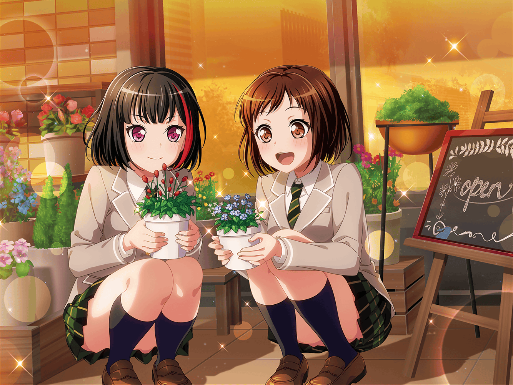

スタジオ
巴
よし、キリがいいし今日の練習はこのへんにしとくか
ひまり
みんな、おつかれーっ！
つぐみ
お疲れ様っ！
……あ、そういえば、蘭ちゃん
蘭
ん、どうしたの？
つぐみ
前に商店街で蘭ちゃんのお父さんに会ったんだけど、
最近都合がつかなくてライブに行けないの、残念がってたよ
蘭
最近は華道の集まりがちょっと忙しいから……
ていうか！ 別にいつも来なくていいし！
巴
はは……蘭のお父さんがライブに来てくれるのも
『いつも通り』だな
蘭
いらないから、それ
モカ
ちょっと〜、みんな早く片付けてよ〜
やまぶきベーカリー閉まっちゃうじゃん〜
ひまり
モカは相変わらずだな〜。
そんなに急がなくたって大丈夫だって
モカ
１秒でも早く行って、１秒でもゆっくり
パンを選びたいんだよ〜
巴
しょうがない。みんな、急いで片付けよう
 商店街
商店街
つぐみ
モカちゃん、パン買えてよかったね
モカ
これもみんなのおかげよ〜。ありがとー
ひまり
こんなに買って、これホントに一人で全部食べるの？
モカ
そだよー。夕飯のあとに食べて、明日の朝食べて、
明日のお昼前に食べて、学校終わったら食べる
巴
それにしたって、おかしい量だろ……
蘭
あ……
つぐみ
蘭ちゃん、どうしたの？
蘭
ごめん、ちょっと寄ってもいい？ 花屋
ひまり
ん〜、いい香り♪ どのお花もかわいいね
巴
蘭、どの花が気になってるんだ？

蘭
あたしは……これ
モカ
なんか不思議なお花〜。お花っぽくないお花だね
蘭
これでも一応バラ科なんだよ
つぐみ
へー！ そうなんだ。なんていうお花？
蘭
これは、ワレモコウっていう花
蘭
メインにはなりづらい花なんだけど
濃い色がアクセントになるし、これが入るだけで
雰囲気もしまるんだよね。結構好きな花
ひまり
確かに、このお花が入ってたらそれだけで大人っぽくなりそう！
つぐみ
このお花、今教えてもらうまで知らなかったよ。
さすが蘭ちゃんだね
蘭
ま、まあ……花にふれる機会は普通の人より多いから……
モカ
前は普通の人よりお花、避けてたのにね
ひまり
もぉ〜！ そういう言い方ダメだよ、モカ！
つぐみ
蘭ちゃんがこうやってお花の話してくれて、嬉しいな。
蘭ちゃん、他のお花についても教えて！
蘭
別にいいけど……
ひまり
ふふっ。蘭、ホントに変わったよね〜
巴
だな。前じゃ考えられないよ。蘭が花屋に寄ったり、
お父さんの話してくれたり
蘭
も、もういいじゃん！ やめてよさっきから……
モカ
お、蘭、照れちゃったよー
ひまり
ふふっ！ 私の知ってる蘭は、こういう蘭♪
巴
こういうとこは変わんないよな〜
蘭
ひまりも巴も、うるさい！
ひまり・巴
あはははっ